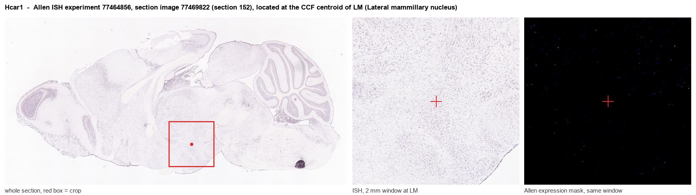
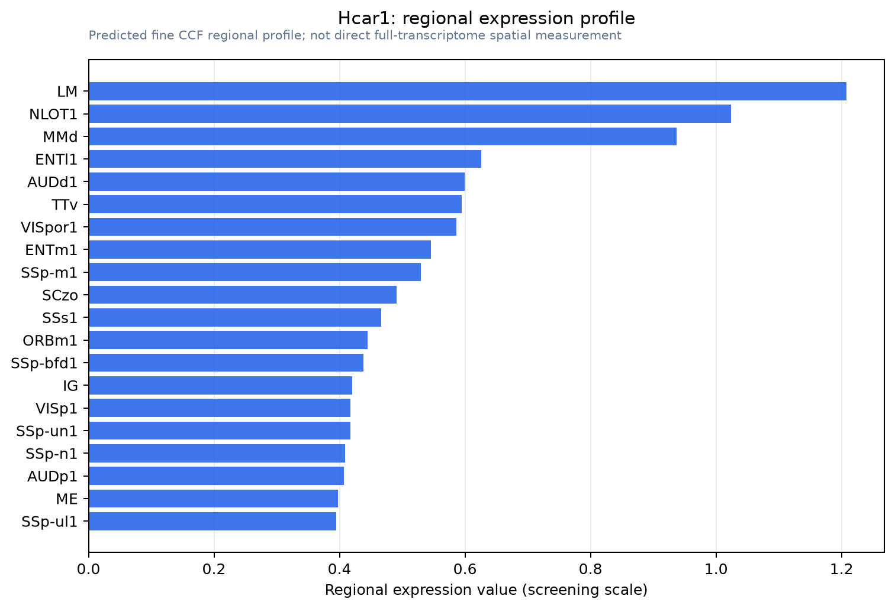

Hcar1
Hydroxycarboxylic acid receptor 1 (G protein-coupled receptor 81)
Spatial tier: REGION_BIASED · Class: GPCR · Top region: LM (Lateral mammillary nucleus) · Positive regions: 42/554
50.6Discovery Score
39.0Targetability Score
CEvidence grade C
What this means: Hcar1: fine CCF profile is region-biased toward LM (top regions: LM, NLOT1, MMd, ENTl1, AUDd1); this is a discovery lead, not direct proof.
Function in LM: evidence, prediction, innovation
- Gene function
- Hcar1 encodes HCA1 (GPR81), a Gi/o-coupled receptor activated by L-lactate at millimolar concentrations. Activation lowers cAMP and, in adipocytes, suppresses lipolysis; in brain it links glycolytic and exercise-driven lactate to receptor signalling rather than to fuel use. It is expressed by neurons, by perivascular and pial fibroblast-like cells, and at the blood-brain interface.
- Region function
- The lateral mammillary nucleus generates the head-direction signal, relaying vestibular and tegmental input through the mammillothalamic tract to anterodorsal thalamus and presubiculum for spatial orientation.
- Published in this region
- inferred No region-specific literature found. The closest evidence is from elsewhere in brain: Lauritzen et al. 2014 localised HCAR1 to neurons and the blood-brain interface and linked it to neurovascular coupling; Briquet et al. 2022 showed HCAR1 activation down-modulates neuronal activity in rodent and human tissue; Jorwal et al. 2019 showed lactate suppresses subicular epileptiform activity via HCA1 and GIRK channels; Morland et al. 2017 showed exercise drives cerebral VEGFA and angiogenesis through HCAR1; Ordenes et al. 2021 showed lactate activates hypothalamic POMC neurons.
- Predicted function
- Prediction: here HCA1 most plausibly acts as a Gi brake coupling local glycolytic lactate to reduced excitability of head-direction cells, probably via GIRK opening as in subiculum, with a parallel perivascular pool driving activity-dependent angiogenesis in this heavily vascularised nucleus. Because the gene is also enriched at the blood-brain interface, part of the regional signal is likely vascular. Hcar1 knockout or local agonist infusion should shift head-direction cell gain and tuning stability during demanding navigation and blunt exercise-induced mammillary capillary growth.
- Innovation
- ★★★★☆ 4/5 Lactate-receptor signalling is well studied in cortex and hippocampus but never in the head-direction system, where metabolic demand during navigation is high.
- Tools
- Hcar1 knockout mice; selective agonists 3,5-dihydroxybenzoic acid (3,5-DHBA) and 3-chloro-5-hydroxybenzoic acid; L-lactate; anti-HCAR1 antibodies; lateral mammillary access by stereotaxic AAV and retrograde targeting from anterodorsal thalamus.
- References
Direct evidence located at the region

Allen ISH experiment 77464856, section image 77469822 (section 152): the section that contains the CCF centroid of Lateral mammillary nucleus according to the Allen image-to-atlas alignment (reference_to_image), with a 2 mm window around that point. Left: whole section, red box = window. Middle: ISH signal. Right: Allen's expression-mask view of the same window. open this image in the Allen viewer
Look it up yourself: Allen Mouse Brain ISH for Hcar1Allen reference atlas: LM (structure 210)ABC Atlas MERFISH viewer(in the ABC Atlas choose dataset MERFISH-C57BL6J-638850-CCF, colour cells by gene "Hcar1" or by parcellation_substructure "LM")All genes confined to LM + 3-D brain
Direct spatial evidence
MERFISH REGION LOCATOR

Regional expression figure

Predicted WMB × fine-CCF profile; not direct full-transcriptome spatial measurement.
Spatial profile
Evidence and specificity
- Evidence status
- PREDICTED_FINE
- Direct sources
- None; predicted localization only
- Exclusive threshold
- 12 positive regions out of 554
- Spatial specificity
- 0.308
- Top-region fraction
- 0.049
- Filter status
- PASS
Interpretation limits
- Cell-type-to-region projection is imputed expression, not direct spatial measurement.
- Adult reference atlases do not establish stability across age, sex, strain, state, or disease.
- Transcript abundance does not guarantee protein abundance or genetic-tool performance.